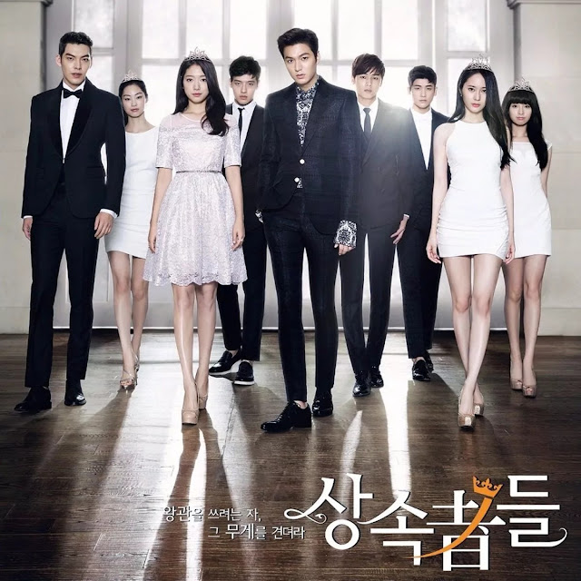
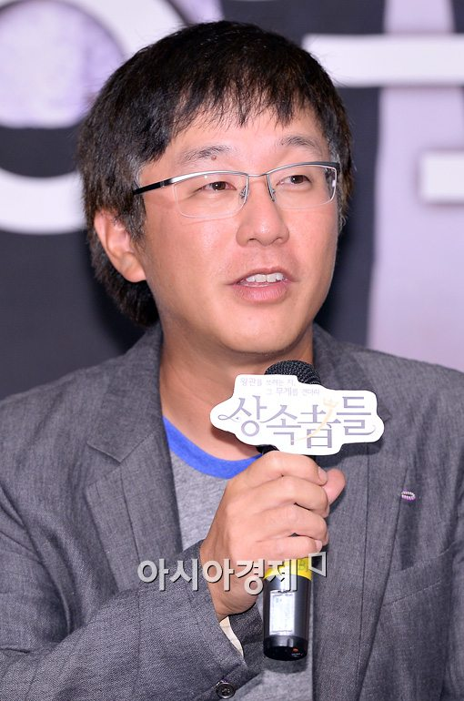

Em The Inheritors, Kim Tan (Lee Min-ho) é um herdeiro bonito e rico de um grande conglomerado coreano que é enviado para estudar nos Estados Unidos, como forma de exílio, a pedido de seu irmão mais velho, Kim Won(Choi Jin-hyuk) que planeja tudo para assumir os negócios da família. Enquanto isso, nos Estados Unidos, Kim Tan esbarra em Cha Eun-Sang (Park Shin-hye), que chegou da Coreia do Sul em busca de sua irmã mais velha. Lentamente, ele se apaixona por ela, sem saber que ela é a filha da empregada da família, que por sua vez é muda. Quando a noiva de Kim Tan, Rachel Yoo (Kim Ji-won), chega para trazê-lo de volta para a Coreia, o seu coração fica dividido entre o amor e o dever. Enquanto isso, Rachel e seu futuro meio-irmão e ex-melhor amigo de Kim Tan, Choi Young-do (Kim Woo-bin) vão para a mesma escola que Kim Tan e Eun-Sang, e Young Do começa a gostar de Cha Eun-Sang. Problemas surgem quando os herdeiros percebem as diferenças entre o dinheiro e o mundo real.

Nome: Shin Hyo
Nome de Família: Kang
Também conhecido como: Gang Sin Hyo
Hangul: 강신효
Local de nascimento: Coreia do Sul